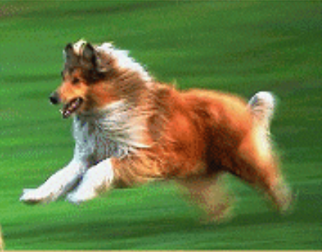
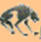

Arsany's Page
My Dog

My dog sasha is my best friend and
she likes to chase the soccer ball when i practice
. It is so funny to see her running down the field
trying to catch the ball with her mouth.
It just won't fit!
once sasha saved my life. when i was only 4 years old.
I started to go into the street to get a ball that had roll
across the street. Of course Idid not think to look for cars!
sasha got in front of me and knocked me backwards onto the sidewalk I was mad until i saw the car go by
where i should have been Then I was so happy that sasha was smarter
than I was!

Los Lobos. my team
Back to Los Lobos.
01/05/02